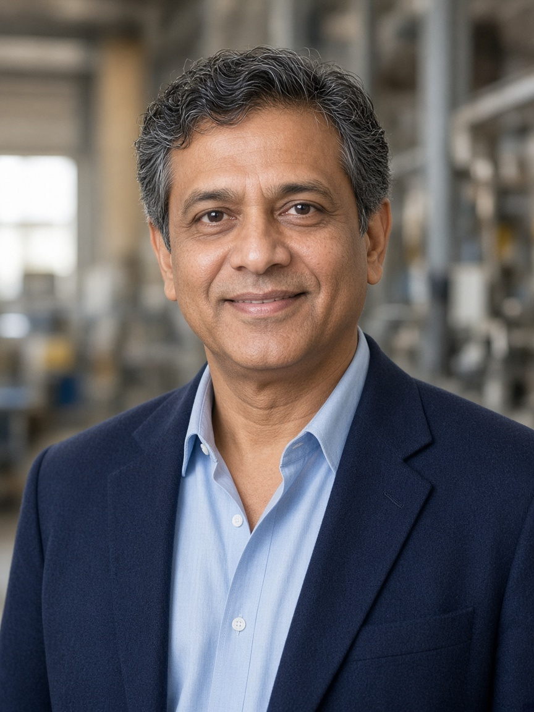
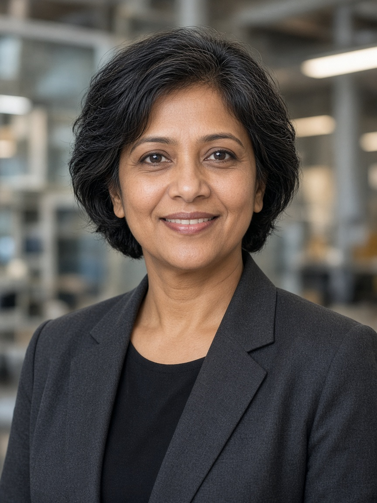
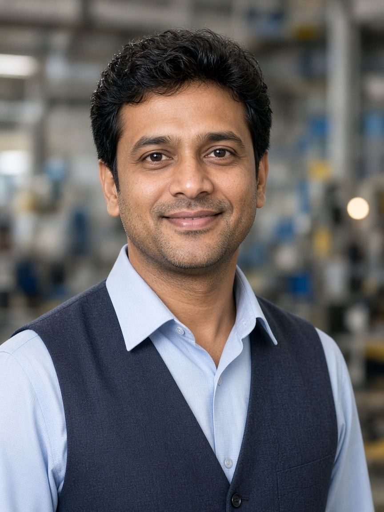

Vikram Deshmukh
Managing Director
Second-generation forge leader. Sets programme strategy with OEMs across Pune, Chennai, and Gurugram — still walks Plant 2 every Tuesday morning.
People
Leadership that grew up on the shop floor — and a workforce drawn from villages around Chakan, Talegaon, and Rajgurunagar.

Managing Director
Second-generation forge leader. Sets programme strategy with OEMs across Pune, Chennai, and Gurugram — still walks Plant 2 every Tuesday morning.

Director · Operations
Ex-tier-1 plant head. Owns OEE, SOP launches, and the multi-plant planning board that keeps festive-season ramps from breaking schedules.

Head · Quality & Labs
Metrology obsessive. Runs CMM cells, supplier audits, and customer SQA portals — fluent in both Marathi briefings and German PPAP packs.
Culture
Operators train through Aarohan Gurukul — a shop-floor academy covering 5S, poka-yoke, and basic SPC. Supervisors rotate across plants so knowledge doesn’t stay siloed in one bay.
Careers
We’re hiring CNC setters, metallurgists, and programme managers. Drop a CV to our people desk.